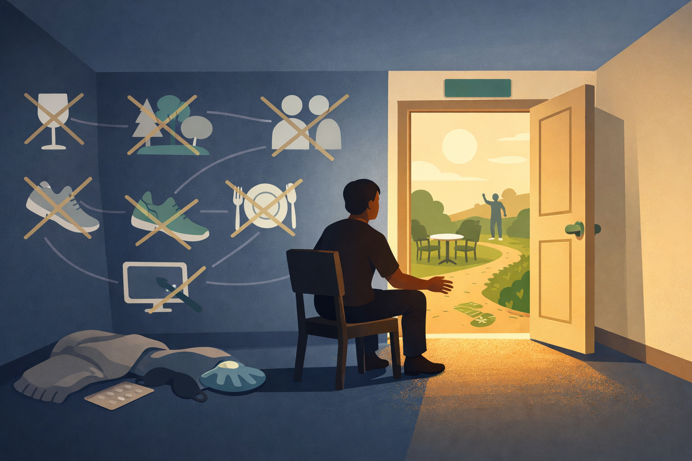
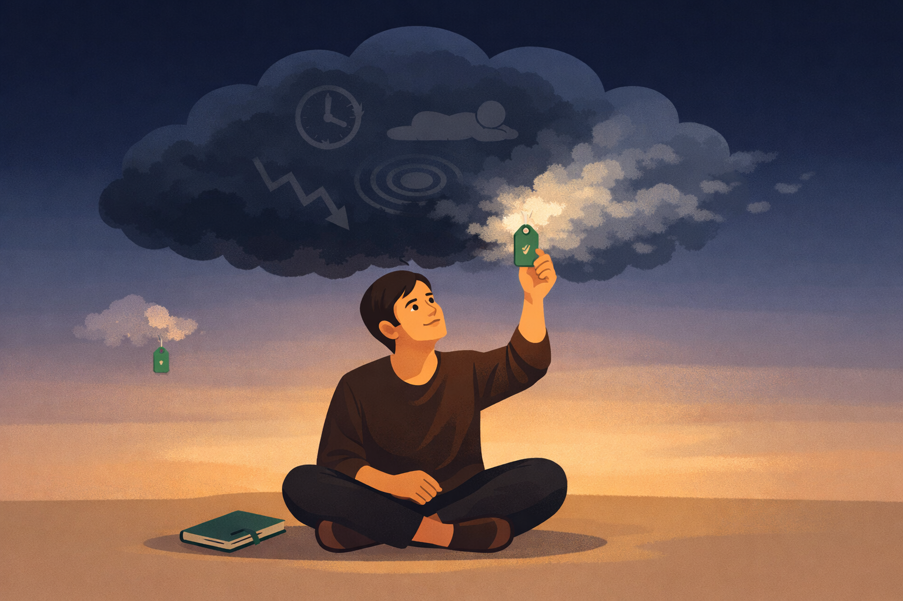

By Rustam Iuldashov
30 years lived experience with chronic migraine | Sources: 28 peer-reviewed references including The Journal of Pain (n=26), BMJ (RCT, n=232), Behaviour Research and Therapy (RCT, n=127) | Last updated: March 28, 2026
Medical Review: This content is based on peer-reviewed research from The Journal of Pain, BMJ, Behaviour Research and Therapy, The Journal of Headache and Pain, Frontiers in Human Neuroscience, eNeuro, Current Pain and Headache Reports, Pain, Pain Research and Management, npj Digital Medicine, Frontiers in Neurology, and Annals of Behavioral Medicine.
Important Notice: This article is for informational purposes only and does not replace professional medical or psychological advice. CBT for migraine should ideally be delivered by a trained therapist. Discuss any psychological treatment decisions with your neurologist or healthcare provider.
Key Takeaways
- Pain catastrophizing is a measurable neurological pattern that predicts migraine disability more strongly than attack frequency alone[3] [10]
- CBT is not positive thinking — it’s structured retraining of thought patterns, behaviors, and coping strategies backed by decades of randomized trials[7] [22]
- Avoidance of triggers may sensitize you to them; graduated exposure combined with CBT shows better results than avoidance alone[13]
- Eleven weeks of CBT physically increases gray matter in the prefrontal cortex — the brain’s pain-regulation center — with changes correlated to reduced catastrophizing[14]
- Combining CBT with preventive medication produces the best outcomes for both migraine frequency and disability[19]
- Digital CBT is emerging as comparably effective to face-to-face therapy, expanding access for people who can’t attend in-person sessions[21]
The Thought That Lowers Your Pain Threshold
You’re lying in the dark. The throbbing has started behind your left eye, and a thought cuts through: This is going to be a bad one. I can’t handle another day like this. Nothing works.
That thought is not emotional noise. It’s a measurable neurological event.
Researchers call it pain catastrophizing — a pattern of rumination, magnification, and helplessness toward pain.[1] In migraine, it doesn’t just reflect your suffering. It reshapes it. Pain catastrophizing is one of the strongest predictors of migraine chronicity — the progression from occasional attacks to near-daily headache.[2] It predicts severity, disability, and quality of life more reliably than attack frequency itself.[3]
The neuroscience is blunt. fMRI studies show that catastrophizing correlates with heightened activation in the anterior insula — the brain’s alarm center — and structural thinning in the prefrontal cortex, the region that governs top-down pain control.[4] [5] Catastrophizing turns down the brain’s volume knob on pain regulation. And turns up the amplifier. The pain threshold drops.
This is where CBT enters. Not as a pep talk. As a neurological intervention.
What CBT Actually Is (And Isn’t)
Cognitive behavioral therapy is the most researched psychological intervention in medicine, developed by Aaron Beck in the 1960s.[6] Its core principle is deceptively simple: the way you interpret events shapes how you feel and what you do. In migraine, that means the thoughts surrounding your attacks — not just the attacks themselves — drive a significant portion of your disability.
CBT for migraine is not telling yourself the pain isn’t real. It is not positive affirmations. It is a structured, skills-based training that targets three interlocking problems:[7]
Cognitive distortions. Automatic thought patterns like catastrophizing (“This will never end”), all-or-nothing thinking (“If I can’t prevent an attack, what’s the point?”), and fortune-telling (“Tomorrow is going to be terrible”). These aren’t personality flaws. They’re habits — and habits can be retrained.
Fear-avoidance behavior. The growing tendency to dodge triggers, activities, social situations, and even thoughts associated with attacks.[8] Avoidance feels protective. The evidence says otherwise.
Low self-efficacy. The eroding belief that you can manage your own migraines. When self-efficacy drops, disability rises — independent of actual attack frequency.[9]
A 2025 study in The Journal of Headache and Pain applied the fear-avoidance model to episodic migraine and found that pain catastrophizing mediated the relationship between pain intensity and disability. Attack frequency, pain intensity, fear of attacks, and depressiveness were all independent predictors — and cognitive-affective factors explained 28% of the total variance in disability.[10]
Twenty-eight percent. More than a quarter of your migraine disability is driven by how you think about your pain — not by the pain itself.
The Avoidance Trap
If you live with migraine, you know avoidance intimately. You skip the restaurant because of the lighting. You cancel plans because stress might trigger an attack. You stop exercising because movement once brought a headache. Your world contracts — and no one questions it, because it seems like common sense.
For decades, the standard advice was exactly that: avoid all triggers. Paul Martin, a clinical psychologist at Monash University, challenged this in a landmark 2010 paper. His argument cut against everything patients had been told: avoidance doesn’t protect you. It sensitizes you.[11]
Martin’s research revealed something counterintuitive. Short exposure to a headache trigger increases pain response — but prolonged, controlled exposure decreases it, following the same neurological pathway as exposure therapy for phobias.[12] His randomized controlled trial compared “Learning to Cope with Triggers” (graduated exposure combined with CBT) against traditional trigger avoidance in 127 patients with migraine and tension-type headache. The results were unambiguous. Graduated exposure produced a 36% reduction in headaches and a 28% reduction in medication use. Avoidance alone produced a 13% reduction that didn’t differ significantly from doing nothing at all.[13]
The conclusion was provocative but clear: telling migraine patients to avoid all triggers may inadvertently increase their sensitivity to those very triggers.
This doesn’t mean throwing yourself at every provocation. Avoiding sleep deprivation and excess alcohol remains sensible. But retreating from stress, social activity, physical movement, and moderate sensory stimulation shrinks your world. And it may shrink your resilience with it.

Your Brain on CBT: The Neuroplasticity Evidence
Here is where CBT stops being a “soft” intervention and becomes a measurable biological one.
In 2013, Seminowicz and colleagues at the University of Maryland scanned chronic pain patients before and after 11 weeks of cognitive behavioral therapy using voxel-based morphometry.[14] What they found changed the conversation.
After CBT, patients showed increased gray matter volume in the bilateral dorsolateral prefrontal cortex, posterior parietal cortex, and hippocampus — regions responsible for cognitive control, pain appraisal, and memory. The supplementary motor area, associated with motor planning under pain, showed decreased volume.[14]
The most important finding: increased gray matter in the prefrontal cortex correlated directly with decreased pain catastrophizing.[14] The patients who learned to think differently about pain literally grew more brain tissue in the regions that regulate it.
A 2022 neuroimaging review confirmed these findings across multiple pain conditions including migraine: CBT produces structural and functional changes in the prefrontal cortex, cingulate gyrus, insula, and somatosensory cortex. After therapy, the brain demonstrates stronger top-down pain control, improved cognitive reappraisal, and altered perception of pain signals.[15] In fibromyalgia, CBT increased activation in the ventrolateral prefrontal cortex — a region associated with executive cognitive control — changing how the brain processes pain signals even when the stimuli remain identical.[16]
This is not “thinking your way out of pain.” This is documented, measurable cortical reorganization. The brain is not a fixed machine. It rewires in response to how you use it — and CBT is a systematic method for directing that rewiring toward pain relief.
⚠️ When to Seek Emergency Help
CBT is a preventive and coping strategy — it is not a replacement for acute medical care. If you experience a sudden, severe headache unlike any you’ve had before (“thunderclap headache”), headache with fever, stiff neck, confusion, seizures, double vision, or weakness, or a significant change in your headache pattern, call your local emergency number immediately.
These may be signs of a serious neurological condition that requires urgent evaluation. Do not use this article to self-diagnose.
What CBT for Migraine Looks Like in Practice
A typical program runs 8 to 12 biweekly sessions with between-session homework.[7] Each component targets a specific piece of the migraine puzzle.
Psychoeducation comes first. Understanding the migraine brain — the threshold model, triggers as contributors rather than causes, the role of central sensitization — changes behavior on its own. When you understand that a trigger adds to a threshold rather than inevitably causing an attack, you stop seeing triggers as landmines and start seeing them as variables you can influence.[17]
Cognitive restructuring is the core skill. You learn to catch automatic thoughts — “I’ll never be able to work like this” — and replace them not with forced optimism but with accuracy: “I’ve had bad weeks before, and I’ve managed. What specific step can I take right now?” The shift is subtle but powerful. You move from catastrophizing to problem-solving.[7] And here’s the deeper layer: catching that automatic thought is the first step in separating yourself from your pain. That voice — the one saying “this will never end” — isn’t you. It’s the migraine talking. Recognizing the difference is where cognitive therapy and narrative therapy meet: you are not your pain, and your pain’s story doesn’t have to be your story.
Behavioral activation reverses avoidance. You gradually reintroduce activities you’ve been dodging — exercise, social plans, travel. The goal: break the cycle where avoidance leads to deconditioning, which leads to more triggers, which feeds more avoidance.[8]
Relaxation training gives the nervous system a competing input against arousal and sensitization. Progressive muscle relaxation, diaphragmatic breathing, or biofeedback — not as a cure, but as a tool. Research shows regular PMR practice can even normalize cortical excitability markers that are abnormal in migraine.[18]
Trigger management replaces blanket avoidance with strategic engagement. Which triggers are genuinely harmful and worth avoiding? Which ones can you build tolerance to through graduated exposure? This approach builds self-efficacy and reduces the fear of attacks — the very fear that the research shows drives more disability than attack frequency.[12] [13] One underrated tool: consistently tracking your triggers and symptoms in a diary. When you see patterns in data rather than relying on your anxiety-filtered memory, you’re already practicing a form of cognitive restructuring. The diary turns “everything triggers me” into “these three things matter most on these specific days” — and that shift from fear to facts is therapeutic in itself.
Try This Tonight
You don’t need 12 weeks of therapy to take the first step. The next time pain arrives and a catastrophizing thought surfaces — “I can’t take this anymore,” “nothing ever helps” — try one thing: label it. Say to yourself, silently or aloud: “I notice my brain is catastrophizing right now.”
That’s it. You are not arguing with the thought. You are not trying to replace it with something positive. You are simply stepping back and observing it — the way you might notice a weather pattern rather than standing in the rain arguing with clouds.
This technique is called cognitive defusion, and it is a core CBT skill. It creates a sliver of distance between you and the thought — enough distance to interrupt the catastrophizing spiral before it amplifies the pain.[7] It won’t stop the migraine. But it can stop the thought from making the migraine worse.

The Combination Effect
One of the most important findings in headache research comes from a landmark trial by Holroyd and colleagues. Patients who received both behavioral migraine management and preventive medication experienced greater reductions in migraine days than those receiving either treatment alone.[19]
But the most telling result was this: behavioral treatment produced larger reductions in headache-related disability than medication alone — regardless of how many migraine days patients had.[19] [20] Patients with comorbid anxiety or depression benefited even more from the combination, not less.[20]
CBT doesn’t just prevent attacks. It changes how you live with them. Even on the days when a migraine arrives, the disability it causes is smaller. The catastrophizing spiral doesn’t take hold. The avoidance doesn’t cascade. You have tools — and the confidence that they work.
Access is expanding. A 2024 indirect comparison meta-analysis found that digital CBT produced comparable reductions in headache frequency to face-to-face therapy.[21] The largest systematic review to date — 50 trials, over 6,000 adults — concluded that CBT, relaxation training, and mindfulness-based therapies may all reduce migraine attack frequency, with CBT showing the broadest evidence base.[22]
The 30-Year Perspective
I’ve lived with migraine for three decades. In that time, I’ve watched the field evolve from “here’s a pill, lie down” to a sophisticated understanding of the migraine brain as a dynamic, plastic system that responds to how we think, behave, and cope.
CBT is not a replacement for medication. It is not a cure. But it addresses something that no triptan, gepant, or CGRP antibody can reach: the cognitive patterns that amplify pain, the avoidance behaviors that shrink your life, and the learned helplessness that tells you nothing will ever work.
The research says otherwise. Your brain can change. And cognitive behavioral therapy is one of the most evidence-based ways to direct that change.
The migraine isn’t just in your head. But the tools to fight it are.
Key Takeaways
- Pain catastrophizing is a measurable neurological pattern that predicts migraine disability more strongly than attack frequency alone
- CBT is not positive thinking — it’s structured retraining of thought patterns, behaviors, and coping strategies backed by decades of randomized trials
- Avoidance of triggers may sensitize you to them; graduated exposure combined with CBT shows better results than avoidance alone
- Eleven weeks of CBT physically increases gray matter in the prefrontal cortex — the brain’s pain-regulation center — with changes correlated to reduced catastrophizing
- Combining CBT with preventive medication produces the best outcomes for both migraine frequency and disability
- Digital CBT is emerging as comparably effective to face-to-face therapy, expanding access for people who can’t attend in-person sessions
⚕️ Important Medical Disclaimer
This article is for informational and educational purposes only and does not constitute medical advice, diagnosis, or treatment. The author, Rustam Iuldashov, is not a licensed physician, neurologist, psychologist, or healthcare professional. He is a patient advocate with 30 years of personal experience living with chronic migraine.
All clinical claims in this article are sourced from peer-reviewed research published in indexed medical journals. Study designs and sample sizes are noted where applicable.
CBT for migraine should ideally be delivered by a trained therapist — the techniques described here are educational, not a substitute for professional treatment. The “Try This Tonight” exercise is a basic cognitive skill, not a therapy session. If you are experiencing significant psychological distress, anxiety, or depression alongside your migraines, please consult a qualified mental health professional.
Always consult a qualified healthcare provider for questions about your individual health, migraine treatment, or psychological therapy decisions. This content was last reviewed for accuracy on March 28, 2026.
References
- Sullivan MJL, Bishop SR, Pivik J. “The Pain Catastrophizing Scale: development and validation.” Psychological Assessment, 7(4):524–532 (1995). doi:10.1037/1040-3590.7.4.524. Study design: Validation study. n=600.
- Radat F, Lantéri-Minet M, Nachit-Ouinekh F, et al. “The GRIM2005 study of migraine consultation in France. III: Psychological features of migraine patients.” Cephalalgia, 29(3):338–350 (2009). doi:10.1111/j.1468-2982.2008.01718.x. Study design: Cross-sectional. n=1,810.
- Holroyd KA, Drew JB, Cottrell CK, et al. “Impaired functioning and quality of life in severe migraine: the role of catastrophizing and associated symptoms.” Cephalalgia, 27(10):1156–1165 (2007). doi:10.1111/j.1468-2982.2007.01420.x. Study design: Cross-sectional. n=232.
- Mathur VA, Moayedi M, Keaser ML, et al. “High frequency migraine is associated with lower acute pain sensitivity and abnormal insula activity related to migraine pain intensity, attack frequency, and pain catastrophizing.” Frontiers in Human Neuroscience, 10:489 (2016). doi:10.3389/fnhum.2016.00489. Study design: Case-control fMRI. n=28.
- Hubbard CS, Khan SA, Keaser ML, et al. “Altered brain structure and function correlate with disease severity and pain catastrophizing in migraine patients.” eNeuro, 1(1):ENEURO.0006-14.2014 (2014). doi:10.1523/ENEURO.0006-14.2014. Study design: Case-control neuroimaging. n=38.
- Beck AT. “Cognitive Therapy and the Emotional Disorders.” New York: International Universities Press (1976). Book.
- Seng EK, Singer AB, Grinberg AS, et al. “Using cognitive behavioral therapy techniques to treat migraine.” Current Pain and Headache Reports (2018). doi:10.1007/s11916-018-0737-y. Study design: Review.
- Farris SG, Thomas JG, Abrantes AM, et al. “Fear, avoidance, and disability in headache disorders.” Current Pain and Headache Reports, 24:1–12 (2020). doi:10.1007/s11916-020-00865-9. Study design: Narrative review.
- French DJ, Holroyd KA, Pinell C, et al. “Perceived self-efficacy and headache-related disability.” Headache, 40(8):647–656 (2000). doi:10.1046/j.1526-4610.2000.040008647.x. Study design: Cross-sectional. n=232.
- Fox J, Gaul C, Kuhlencord M, et al. “Identifying cognitive-affective mechanisms underlying disability in episodic migraine: Using the fear avoidance model to examine interactions.” The Journal of Headache and Pain, 26:167 (2025). doi:10.1186/s10194-025-02101-4. Study design: Cross-sectional path analysis. n=158.
- Martin PR. “Managing headache triggers: think ‘coping’ not ‘avoidance.’” Cephalalgia, 30(5):634–637 (2010). doi:10.1111/j.1468-2982.2009.01989.x. Study design: Editorial/Review.
- Martin PR. “Behavioral management of migraine headache triggers: learning to cope with triggers.” Current Pain and Headache Reports, 14(3):221–227 (2010). doi:10.1007/s11916-010-0112-z. Study design: Review.
- Martin PR, Reece J, Callan M, et al. “Behavioral management of the triggers of recurrent headache: a randomized controlled trial.” Behaviour Research and Therapy, 61:1–11 (2014). doi:10.1016/j.brat.2014.07.002. Study design: RCT. n=127.
- Seminowicz DA, Shpaner M, Keaser ML, et al. “Cognitive-behavioral therapy increases prefrontal cortex gray matter in patients with chronic pain.” The Journal of Pain, 14(12):1573–1584 (2013). doi:10.1016/j.jpain.2013.07.020. Study design: Pre-post neuroimaging. n=26.
- Bao F, Wu Z, Fang J, et al. “Neuroimaging mechanism of cognitive behavioral therapy in pain management.” Pain Research and Management, 2022:6266619 (2022). doi:10.1155/2022/6266619. Study design: Systematic review.
- Jensen KB, Kosek E, Wicksell R, et al. “Cognitive behavioral therapy increases pain-evoked activation of the prefrontal cortex in patients with fibromyalgia.” Pain, 153(7):1495–1503 (2012). doi:10.1016/j.pain.2012.04.010. Study design: RCT with fMRI. n=43.
- Klan T, Gaul C, Liesering-Latta E, et al. “Efficacy of cognitive-behavioral therapy for the prophylaxis of migraine in adults: a three-armed randomized controlled trial.” Frontiers in Neurology, 13:852616 (2022). doi:10.3389/fneur.2022.852616. Study design: RCT. n=106.
- Kropp P, Meyer B, Meyer W, Dresler T. “An update on behavioral treatments in migraine — current knowledge and future options.” Expert Review of Neurotherapeutics, 17(11):1059–1068 (2017). doi:10.1080/14737175.2017.1378094. Study design: Review.
- Holroyd KA, Cottrell CK, O’Donnell FJ, et al. “Effect of preventive (β blocker) treatment, behavioural migraine management, or their combination on outcomes of optimised acute treatment in frequent migraine: randomised controlled trial.” BMJ, 341:c4871 (2010). doi:10.1136/bmj.c4871. Study design: RCT. n=232.
- Seng EK, Holroyd KA. “Psychiatric comorbidity and response to preventative therapy in the treatment of severe migraine trial.” Cephalalgia, 32(5):390–400 (2012). doi:10.1177/0333102412439354. Study design: Secondary analysis of RCT. n=232.
- Huang YB, Lin L, Li XY, et al. “An indirect treatment comparison meta-analysis of digital versus face-to-face cognitive behavior therapy for headache.” npj Digital Medicine, 7:265 (2024). doi:10.1038/s41746-024-01264-9. Study design: ITC Meta-analysis. n=550.
- Treadwell JR, Tsou AY, Rouse B, et al. “Behavioral interventions for migraine prevention.” Comparative Effectiveness Review No. 270. AHRQ Publication No. 24-EHC015 (2024). doi:10.23970/AHRQEPCCER270. Study design: Systematic review. n=6,024.
- Coppola G. “Neural plasticity and migraine.” The Journal of Headache and Pain, 16(Suppl 1):A26 (2015). doi:10.1186/1129-2377-16-S1-A26. Study design: Review.
- Bae JY, Kim NY. “Cognitive behavioral therapy for migraine headache: a systematic review and meta-analysis.” Medicina, 58(1):44 (2022). doi:10.3390/medicina58010044. Study design: Systematic review/Meta-analysis. n=621.
- Seng EK, Holroyd KA. “Dynamics of changes in self-efficacy and locus of control expectancies in the behavioral and drug treatment of severe migraine.” Annals of Behavioral Medicine, 40(3):235–247 (2010). doi:10.1007/s12160-010-9223-3. Study design: Secondary analysis of RCT. n=232.
- Hassinger HJ, Semenchuk EM, O’Brien WH. “Appraisal and coping responses to pain and stress in migraine headache sufferers.” Journal of Behavioral Medicine, 22(4):327–340 (1999). doi:10.1023/A:1018722002393. Study design: Cross-sectional. n=68.
- Seminowicz DA, Davis KD. “Cortical responses to pain in healthy individuals depends on pain catastrophizing.” Pain, 120(3):297–306 (2006). doi:10.1016/j.pain.2005.11.008. Study design: fMRI. n=16.
- De Tommaso M, Ambrosini A, Brighina F, et al. “Neural plasticity in common forms of chronic headaches.” Biomedicine & Pharmacotherapy (2015). Study design: Narrative review.

How We Create Content
- Peer-reviewed sources only. This article cites The Journal of Pain, BMJ, Behaviour Research and Therapy, The Journal of Headache and Pain, Frontiers in Human Neuroscience, eNeuro, Current Pain and Headache Reports, Pain, Pain Research and Management, npj Digital Medicine, Frontiers in Neurology, Annals of Behavioral Medicine, Cephalalgia, Headache, Medicina, and Expert Review of Neurotherapeutics.
- Study transparency. Study design and sample sizes noted for all clinical references.
- Source verification. All 28 claims backed by numbered references with DOI links.
- Experience + Science. 30 years personal migraine experience combined with peer-reviewed evidence.
- Regular updates. Articles reviewed when significant new research emerges.
- No conflicts of interest. No funding from pharmaceutical companies, therapy providers, or CBT platform developers.
Track Your Thoughts. See Your Patterns. Change Your Brain.
Migraine Companion lets you log triggers, moods, and coping strategies alongside your attack diary — turning scattered anxiety into visible data. Built by someone who has lived this for 30 years.
Last reviewed: March 2026
Next scheduled review: September 2026